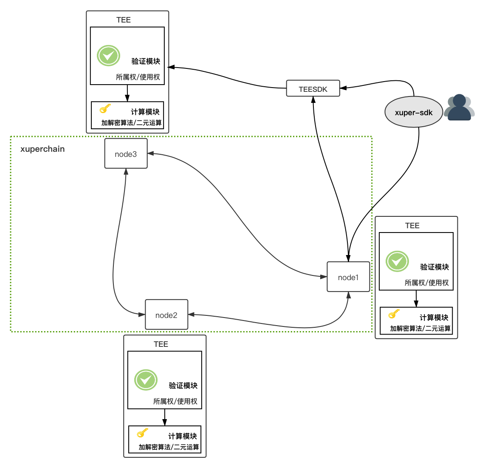

可信账本¶
背景¶
在大数据和人工智能时代，数据的广泛链接和应用导致隐私问题日益凸显。数据流通可以产生巨大的价值，而阻碍数据流通的主要因素就是数据隐私问题。保护数据安全既是对像百度这样的科技公司的要求，也是行业的底线。
为实现数据流通过程中的隐私保护， XuperChain 可信账本采用了Intel SGX和同态加密等多种技术，实现了数据隐私计算、数据权限管理和数据存证溯源功能。
名词解释¶
可信账本：基于百度 XuperChain 和Mesatee技术，支持合约数据加密存储及链上密文运算等功能。
TEE：可信执行环境(TEE)是CPU的安全区域，它可以保护在其内部加载的代码和数据的机密性与完整性。
SGX：Software Guard Extensions(SGX)是Intel推出的基于Intel CPU的硬件安全机制。
Mesatee：Memory Safe TEE(Mesatee)是百度基于Intel SGX设计的内存安全的可信安全计算服务框架。
架构设计¶
下图是可信账本的系统架构设计
TEESDK是与TEE服务请求的入口，将编译为动态链接库被 XuperChain 调用，实现链上的隐私计算。
可信账本目前支持数据加密存储、数据权限管理、秘钥托管和基本的密文计算功能，此部分代码暂未开源。
重要接口和数据结构¶
TEESDK¶
// 提交任务到TEE服务，返回计算结果
func (s *TEEClient) Submit(method string, cipher string) (string, error)
Xuperchain¶
// contractSDK
// TEE隐私计算接口，供合约调用
bool binary_ops(const std::string op, const Operand &left_op,
const Operand &right_op, std::map<std::string, std::string> *result)
bool authorize(const AuthInfo &auth, std::map<std::string, std::string> *result)
// contract/teevm
// 解析合约调用为可信账本调用
func (tf *TrustFunctionResolver) ResolveFunc(module, name string) (interface{}, bool)
// 调用TEESDK插件执行链上隐私计算
func (tf *TrustFunctionResolver) tfcall(ctx exec.Context, inptr, inlen,
outpptr, outlenptr uint32) uint32
// 可信账本配置，要设置TEESDK插件地址及相关配置地址
type TEEConfig struct {
Enable bool `yaml:"enable"` // enable: on or off to enable private ledger
PluginPath string `yaml:"pluginPath"` // path to dynamic library
ConfigPath string `yaml:"configPath"` // config path for the dynamic
}